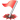
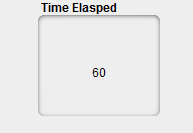
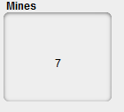

Overview
Minesweeper is a game of logic and probability. The game begins with a grid of cells, some of which contains mines. The goal is to reveal all the cells that are safe by clicking on them. A cell is safe if it doesn't contain a mine. Once the user has revealed all safe cells, the game is won!
The game begins with unrevealed cells
If you click an unrevealed cell you may uncover a number cell. Number cells range from 1 to 8 and represent the number of neighboring cells containing mines. For example, in the game below, four cells are touching 1 neighboring mine and three cells are touching 2 neighboring mines.
If you suspect that a cell contains a mine, you can flag it by right-clicking the cell. In the game shown below, two cells have been correctly flagged as containing mines.
You can right click again to cycle from a flag to a question mark, which means you aren't certain if there is a mine or not. You can right click to cycle back to a blank cell.
Once you hit a mine, you lose the game!
Under the Game menu, you can choose to start a new game or exit; in the Options menu you can set the total number of mines; in the Help menu you can find this page and the about page.
Here you can see how much time has passed since you started the game.
Here you can see how many mines are left.